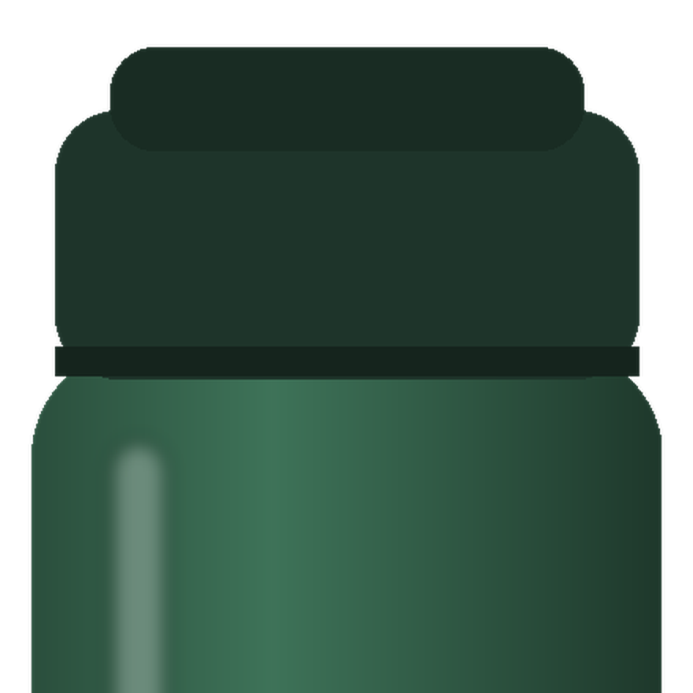
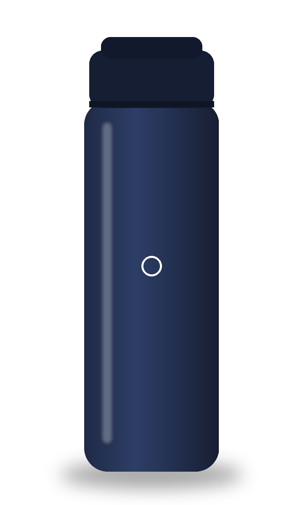

꼭 필요한 세 가지
01
이중 진공 단열
두 겹 스테인리스 사이 진공층이 온도를 지켜 줍니다.
연출 사진 자리
02
실리콘 패킹
뚜껑이 단단히 밀착되어 가방 속에서도 안심.

03
공간에 어울리는 3가지 컬러
그린 · 크림 · 네이비


가볍고 새지 않는 500ml 데일리 텀블러

두 겹 스테인리스 사이 진공층이 온도를 지켜 줍니다.
뚜껑이 단단히 밀착되어 가방 속에서도 안심.

그린 · 크림 · 네이비